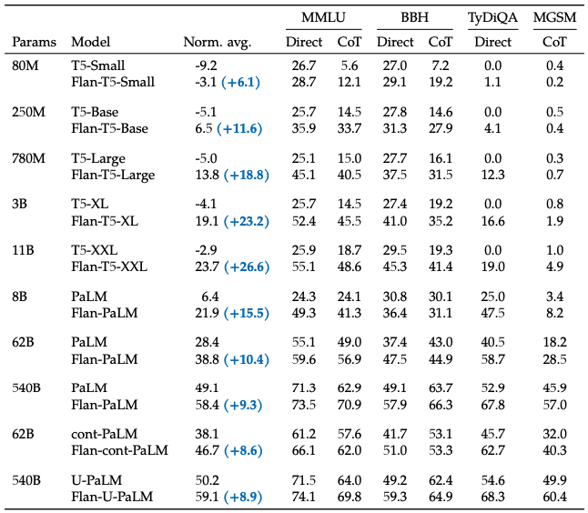
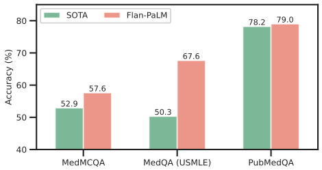
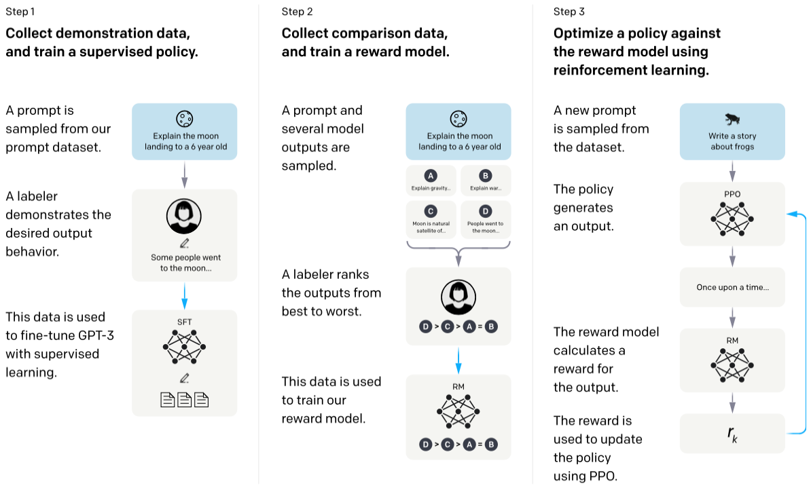
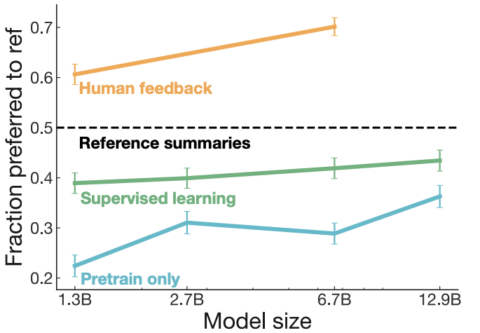
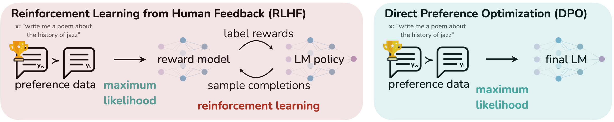
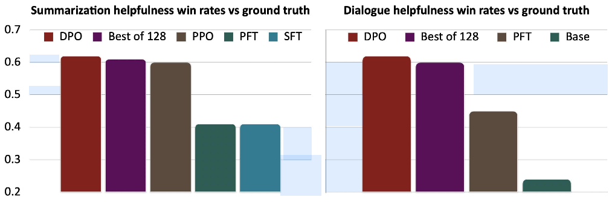

Post-Training LLMs
1 Introduction: Why Post-Training Matters for Reasoning
Foundation models like GPT-4, Claude, and Gemini are large neural networks trained on massive text corpora to predict the next word in a sequence. This stage of training — often called pre-training — gives models broad generality. They learn patterns of language, knowledge, and relationships in data. This flexibility allows them to adapt across many tasks.
But in their raw form, these models are still optimized for next-token prediction rather than following instructions or aligning with human expectations. As a result, they can generate inconsistent reasoning, misleading statements, or unhelpful answers. This gap between raw capability and user needs is why post-training is essential— adapting a foundation model into a safe, reliable, instruction-following AI assistant, much like learning how to apply the knowledge from a vast library in useful, trustworthy ways.
Post-training typically involves two key stages:
- Supervised Fine-Tuning (SFT): teaching the model to follow instructions and carry out tasks
- Preference Optimization: aligning outputs with human feedback using methods like RLHF, DPO, or RLAIF
Alongside these methods, prompting techniques also play a key role. Approaches such as zero-shot, few-shot, and chain-of-thought prompting don’t change the model’s weights but can steer its behavior at inference time. Prompting often delivers strong results without additional training, making it an essential part of real-world LLM deployment.
In the sections that follow, we’ll explore post-training techniques alongside prompting strategies, and how they work together to transform general-purpose LLMs into dependable, aligned assistants. This transformation explains why ChatGPT felt so different from GPT-3, why Claude can engage in dialogue that feels helpful rather than predictive, and why modern AI systems reliably follow complex instructions while staying aligned with user intent.
2 Prompting
2.1 In-Context Learning: Zero-Shot and Few-Shot
Concept:
In-Context Learning (ICL) lets models learn new tasks by using examples directly in the prompt—no parameter updates required. Zero-shot uses just an instruction, while few-shot provides labeled examples. In both cases, the model infers patterns from the prompt and applies them to new inputs.
Key Variants
1. Zero-Shot Prompting: Ask the model to perform a task using only an instruction or question — without providing any explicit examples of how the task should be done.
- The model relies solely on its pre-trained knowledge and its understanding of the instruction to produce the output.
- Even without examples, the instruction itself acts as a minimal form of context that the model conditions on.
Example: Translate the following sentence into French: The weather is beautiful today.
No translations are shown beforehand — the model generates the French sentence using patterns it learned during training.
2. Few-Shot Prompting: Provide a small number of (input → output) examples before asking for a new prediction.
- One example = one “shot”, 5 examples = 5-shot.
- More examples generally improve performance, but are limited by the model’s maximum context length.
Example: Showing labeled sentiment examples before asking for classification of a new sentence.
The diagram below visualizes zero-shot, one-shot, and few-shot prompting, and contrasts them with fine-tuning for clarity.

These prompting strategies differ in how much context the model receives before making a prediction. The charts below reveal how both model size and the number of in-context examples impact benchmark accuracy.
Left chart: Larger models consistently improve SuperGLUE scores across all prompting types, with few-shot prompting delivering the largest gains — the jump from the smallest (~0.1B) to the largest (175B) model is over 20 points in few-shot mode. Right chart: For GPT-3 (175B parameters), zero-shot starts at 68.0, one-shot improves to 69.8, and 8-shot reaches 72.5, matching Fine-Tuned BERT++. At 32-shot, performance climbs to 75.5, surpassing Fine-Tuned BERT++ without any parameter updates.
Across all prompting types, performance consistently improves as model size increases. Few-shot prompting delivers the largest gains, with GPT-3 (175B) achieving scores close to fine-tuned models without any parameter updates.
Advantages
- Flexibility: The model can incorporate new information at inference time, enabling it to respond to queries beyond its original training cut-off date.
- No Retraining Needed: Eliminates the need to re-train for minor domain or task changes.
- Emergent Performance: Works surprisingly well in very large models (e.g., GPT-3 with 175B parameters) for diverse tasks like translation, reading comprehension, arithmetic, SAT questions, and commonsense reasoning.
Limitations
- Context Limits: Constrained by max input size; too many examples can’t fit.
- Variable Performance: Output quality depends on prompt wording, ordering, and examples.
- No True Learning: The model’s weights aren’t updated—adaptation disappears once context is gone.
- Reasoning Weaknesses: Struggles with multi-step reasoning and provides little interpretability for debugging.
ICL effectively turns prompting into a form of temporary fine-tuning, where the “training data” exists only within the prompt window. This makes it a powerful method for continual adaptation without persistent retraining.
Some of these reasoning limitations — particularly weak multi-step reasoning — can be addressed with Chain-of-Thought prompting (Wei et al., 2022), which guides the model to generate intermediate steps before producing the final answer.
2.2 Addressing ICL’s Reasoning Limitations: Chain-of-Thought Prompting
Concept:
Chain-of-Thought (CoT) prompting augments in-context learning by encouraging models to generate intermediate reasoning steps before the final answer. Instead of jumping directly from input → output, the prompt shows worked-out examples of step-by-step reasoning, which the model then imitates. This produces more transparent, accurate results, especially on arithmetic or multi-step problems.
Why It Helps:
CoT prompting addresses several ICL weaknesses:
- Improved Multi-Step Reasoning: By breaking down problems into smaller sub-problems, the model performs better on tasks requiring arithmetic computation, symbolic reasoning, and commonsense logic.
- Interpretability: Produces intermediate steps that allow humans to verify and debug reasoning.
- Error Reduction: Reduces the likelihood of “shortcut” or guess-based answers by forcing the model to articulate the full solution path.
Empirical Evidence (Wei et al., 2022):
The chart below is arranged by benchmark in rows (Row 1 = GSM8K, Row 2 = SVAMP, Row 3 = MAWPS) and by model family in columns (Column 1 = LaMDA, Column 2 = GPT, Column 3 = PaLM).
- On the GSM8K math word problem benchmark (Row 1), CoT prompting with GPT-3 175B improved solve rate from 17.7% (standard prompting) to 57.1%, a gain of nearly 40 percentage points.
- On the SVAMP benchmark (Row 2), CoT prompting with GPT-3 175B increased performance from about 44% to 72%, surpassing the prior supervised best.
- On the MAWPS benchmark (Row 3), CoT prompting with PaLM 540B boosted accuracy from roughly 78% to 92%, matching or exceeding the prior supervised best.
Across all benchmarks and model families (LaMDA, GPT, PaLM), larger models consistently show greater gains from CoT prompting, with the blue curves sitting above the black curves, especially at the largest scales.
When It Works Best:
- Tasks with compositional structure where intermediate reasoning steps are natural.
- Models with sufficient scale (CoT’s benefits appear more strongly in models >100B parameters).
- Prompts that clearly format and separate reasoning from final answers.
Advantages
- Enhanced Multi-Step Reasoning: Significant gains on benchmarks like GSM8K and MultiArith.
- Interpretability: Step-by-step outputs help in auditing and debugging.
- Prompt-Only Method: No fine-tuning required; works within ICL framework.
- Emergent Capability: Reasoning skills become apparent in large-scale models.
Limitations
- Model Size Dependency: Large performance gains appear mainly in models >100B parameters; smaller models often produce incoherent chains.
- Increased Output Length: More tokens may affect latency and cost.
- Limited Benefit for Simple Tasks: Minimal improvement for factual recall or single-step reasoning.
- Error Propagation: Early mistakes in reasoning can cascade to incorrect final answers.
- Hallucinated Logic: Reasoning may be coherent but factually wrong.
Beyond prompt engineering, another way to boost model performance without changing its weights is through Test-Time Scaling (TTS).
While both prompting and TTS work without retraining the model, they target different levers for improvement:
| Feature | Prompting | Test-Time Scaling (TTS) |
|---|---|---|
| When applied | Before inference | During inference |
| What changes | The input prompt to guide the model’s output | The inference process — computation allocation, search, sampling |
| Core mechanism | Better instructions, examples, or formatting | Iterative refinement, search-based decoding, adaptive sampling |
| Goal | Steer the model toward a better answer | Improve accuracy/reasoning by giving the model more “thinking” time or attempts |
| Analogy | Asking a student a well-phrased question | Giving the student more scratch paper and extra tries |
This distinction is important: prompting focuses on how you ask, while TTS focuses on how the model thinks and searches for answers once asked.
3 Test‑Time Scaling Methods
Concept:
Test-time scaling (TTS) boosts a model’s reasoning and performance during inference—without changing its parameters—by allocating more “thinking time.” It does this by running extra compute, exploring multiple reasoning paths, and blending the best results. Empirical results show strong efficiency: TTS can match the performance of models up to 14× larger while using 4× less compute[1]. Techniques like Self-Consistency—sampling multiple reasoning paths and taking a majority vote—further improve reasoning accuracy, with gains of +17.9% on GSM8K, +11.0% on SVAMP, and +12.2% on AQuA[9].
TTS is especially valuable when inference budgets are limited or the base model already has strong core competence. However, for tasks that require fundamentally new capabilities, pre-training remains essential, since larger models inherently encode deeper reasoning ability.
Advantages:
- Improves performance without retraining or altering model parameters
- Can match or exceed much larger models on certain tasks at a fraction of the compute cost
- Flexible allocation of compute based on input complexity
- Enables on‑demand scaling in resource‑constrained settings
- Works well as part of a hybrid strategy with pre-training
Limitations:
- Gains are often smaller on tasks requiring novel skills not present in the base model
- Additional inference compute can increase latency and operational costs
- Requires effective task‑complexity estimation to allocate resources efficiently
- May yield diminishing returns if scaling is excessive for a given task
The diagram below organizes TTS techniques into categories, showing typical integration flows between methods.
Category Overview:
- Scaling Strategies – Methods that expand search breadth or depth, exploring multiple reasoning paths to increase accuracy (e.g., Beam Search, Monte Carlo Tree Search, Best-of-N Search).
- Advanced Sampling – Techniques that selectively sample outputs based on confidence or external verification to improve efficiency and quality (e.g., Confidence-Based Sampling, Search Against Verifiers).
- Improved Reasoning – Approaches that structure thinking into multi-step processes for complex problem-solving (e.g., Chain-of-Thought Prompting, Tree-of-Thoughts, Self-Consistency Decoding).
- Sequential Revision – Iterative refinement strategies that repeatedly improve answers until they meet quality criteria (e.g., Self-Improvement via Refinements).
While many approaches exist for test‑time scaling, a few have emerged as especially influential in practical LLM applications. The sections below explore some of these methods in greater detail, including their mechanics, strengths, and trade‑offs.
3.1 Best-of-N Search (Rejection Sampling)
Concept:
Best-of-N (BoN) search enhances model performance at inference by generating N candidate outputs (often via sampling) and selecting the one that scores highest according to a chosen criterion — such as a reward model, likelihood score, or rule-based evaluator. This approach systematically explores multiple solution paths and prunes all but the top-rated result. Compared to Beam Search, BoN treats each candidate independently, which can increase diversity but may also be more computationally expensive.
Advantages:
- Can significantly boost task performance, especially with a robust reward model
- Flexible — works with both rule-based and learned scoring functions
- Simple to implement; requires only control over N and the selection criterion
- Competitive with post-training methods like RLHF and DPO when paired with strong evaluators
Limitations:
- Higher computational cost as N increases
- Performance depends heavily on the quality of the scoring function or reward model
- May select lower-probability solutions if scoring is imperfect (reward hacking risk)
- Instability can occur if the N parameter is too large or too small for the task
3.2 Self-Consistency Decoding
Concept:
Self-Consistency is a decoding strategy designed to improve reasoning by aggregating answers from multiple reasoning paths. Instead of following a single chain of thought, the model samples diverse reasoning chains (using techniques like prompt engineering to encourage diversity, temperature sampling, or stochastic decoding) and then outputs the final answer that is most consistent across them.
The underlying intuition is that if a complex question has a unique correct answer, different valid reasoning paths should converge on the same result. This majority vote or highest probability after marginalization approach reduces the likelihood of errors from flawed single reasoning chains and is especially effective in reasoning tasks.
Advantages:
- Improves correctness in complex reasoning scenarios
- Works well for arithmetic, commonsense reasoning, and multi-step problem-solving
- Reduces reliance on any single, potentially flawed reasoning path
- Can be combined with Chain-of-Thought prompting for greater gains
Limitations:
- Higher inference cost due to multiple reasoning path generations
- Gains diminish for simpler tasks where a single reasoning path is sufficient
- Effectiveness depends on diversity and quality of sampled reasoning paths
Best-of-N Search (Rejection Sampling): Goal is to find the highest-quality single output.
The model is run multiple times with the same prompt, and each output is scored or filtered using a heuristic, probability, or verifier. The output with the best score is selected.Self-Consistency Decoding: Goal is to find the answer most reasoning paths agree on.
The model is run multiple times, encouraging different step-by-step reasoning chains. The final answer from each chain is collected, and the one appearing most often (majority vote) is chosen.
The following table summarizes key test‑time scaling methods described in LLM Post‑Training: A Deep Dive into Reasoning by Komal Kumar, Tajamul Ashraf et al[1].
| Method | Goal & Common Use Cases | Benefits | Limitations |
|---|---|---|---|
| Beam Search | Maintain top‑N highest‑probability reasoning paths at each step; used in structured reasoning, planning, and Tree‑of‑Thought search. | Improves coherence and accuracy by systematically exploring multiple reasoning chains. | Computationally expensive; beam width must be tuned; may still miss rare but correct paths. |
| Best‑of‑N (Rejection Sampling) | Generate N candidate outputs (via sampling) and select the best using a criterion (e.g., reward model, model likelihood). | Improves answer quality for easier tasks; straightforward to implement; flexible budget. | High cost if N is large; requires effective selection criteria; may miss diversity benefits. |
| Self‑Consistency Decoding | Sample multiple reasoning chains, then select the most common final answer. | Improves multi‑step reasoning accuracy; simple and model‑agnostic. | Higher inference cost; relies on majority vote, which may fail if most outputs are wrong. |
| Tree of Thoughts (ToT) | Expand multiple reasoning paths as a search tree, evaluating and pruning branches. | Enhances complex problem solving and planning; allows backtracking. | High computational cost; requires good heuristics to prune effectively. |
| Search‑Augmented Verification | Use external verifiers to evaluate and rank candidate answers or reasoning steps. | Increases correctness in binary decision tasks; modular and flexible. | Dependent on verifier quality; additional inference steps add latency. |
| Self‑Improvement via Refinements | Model iteratively critiques and revises its own answers until acceptable. | Can improve accuracy across varied tasks; useful for open‑ended reasoning. | Risk of over‑editing or drifting from initial intent; higher inference cost. |
While prompting and test-time scaling work well, they have limits—sometimes you need to actually change how the model thinks, which requires updating its weights through supervised fine-tuning.
4 Supervised Fine-Tuning (SFT)
Concept:
Supervised Fine-Tuning (SFT) is a post-training method where a pre-trained foundation model is further trained on labeled examples (input–output pairs) to better align it with desired behaviors or domain needs. While pre-training learns broad language patterns, SFT narrows the focus—adapting the model for specific goals by adjusting its internal weights on high-quality datasets. In contrast to prompting or test-time scaling, which only influence outputs at inference time, SFT changes the model’s parameters directly, so the improvements stay in the model even after the training. It also serves as the foundation for later optimization steps such as preference alignment (e.g., RLHF or DPO).
SFT can be applied in two main ways:
- General-purpose instruction tuning – teaching the model to follow diverse natural language instructions across many tasks.
- Domain-specific tuning – adapting the model for specialized fields such as legal, medical, or financial applications.
While many approaches exist for supervised fine‑tuning, Instruction Fine‑Tuning and Domain‑Specific Fine‑Tuning are among the most prevalent in modern LLM post‑training pipelines. The sections below explore these methods in greater detail.
4.1 Instruction Fine-Tuning
Concept:
Instruction Fine-Tuning is the most common form of SFT, focusing on training a pre-trained model with a broad range of instruction–response examples across tasks like summarization, question answering, classification, and creative writing. The aim is to help the model reliably follow natural language instructions — even for tasks it hasn’t explicitly seen — by aligning outputs with the user’s intent rather than simply predicting the next word.
Advantages:
- Strong generalization to unseen tasks in zero-shot and few-shot settings.
- Produces more helpful, consistent, and structured outputs.
- Improves controllability across varied prompt styles.
- Provides a solid baseline for later optimization.
Limitations:
- Needs large, diverse, and high-quality instruction datasets.
- Open-ended tasks can be hard to evaluate objectively.
- Human-generated data may bring bias, inconsistency, or noise.
- Risk of overfitting to the style of the fine-tuning dataset if it lacks diversity.
The table below reports results from the Flan (Wei et al., 2022) study, which evaluated the impact of supervised fine-tuning (SFT) — specifically instruction fine-tuning — on multiple pre-trained language models of different sizes (ranging from 80M to 540B parameters).
Performance is measured across four benchmarks:
- MMLU – a multi-task test covering 57 diverse subjects.
- BBH – the Big-Bench Hard set of reasoning tasks.
- TyDiQA – a multilingual question-answering benchmark.
- MGSM – multilingual grade school math problems.
The “Norm. avg.” column is the unweighted normalized average score across all benchmarks, while “Direct” and “CoT” show performance under direct prompting and chain-of-thought prompting. Gains in parentheses represent improvement in normalized average from adding SFT.

Instruction fine-tuning consistently improves performance across model sizes. In the Flan-T5 family, gains tend to grow with model size — from +6.1 for the 80M model to +26.6 for the 11B model. For PaLM, the 62B version’s normalized average jumps from 28.4 to 38.8 (+10.4), with notable gains on MMLU (55.1 → 59.6) and MGSM (18.2 → 28.5). The largest 540B model also improves from 49.1 to 58.4 (+9.3) and boosts TyDiQA accuracy from 52.9 to 67.8. While the improvement is smaller in absolute terms for the 540B model, this is because it starts from a much higher baseline, leaving less headroom for improvement[5].
4.2 Domain-Specific Fine-Tuning
Concept:
Domain-Specific Fine-Tuning narrows the model’s focus to excel in a specialized area — such as finance, healthcare, law, climate science, or software engineering — by training it on carefully selected domain-relevant datasets. This targeted approach strengthens the model’s command of the terminology, style, and knowledge specific to the field, enabling more precise, trustworthy, and context-aware outputs for professional or high-stakes use.
Advantages:
- Boosts accuracy, factual grounding, and relevance in the chosen domain.
- Builds user trust in sensitive or regulated applications.
- Supports compliance with industry standards.
- Can reduce hallucinations by anchoring responses in vetted domain content.
Limitations:
- Requires high-quality domain datasets, which may be expensive or hard to source.
- May lose versatility on out-of-domain tasks.
- Inherits biases or blind spots from domain data.
- Risk of over-specialization if coverage is too narrow.
The chart below reports results from the BioMedLM study (Singhal et al., 2022), which applied domain-specific fine-tuning to a large pre-trained model (Flan-PaLM 540B) using biomedical and clinical datasets from the MultiMedQA benchmark. Performance is compared against the best previously published models across three key datasets:
- MedMCQA – general medical knowledge in Indian medical entrance exams.
- MedQA (USMLE) – general medical knowledge in US medical licensing exams.
- PubMedQA – biomedical literature question answering.
Accuracy (%) is shown for the previous state-of-the-art (SOTA) and for the domain-tuned Flan-PaLM 540B model.

Domain-specific fine-tuning delivers substantial accuracy gains across all three benchmarks. On MedQA (USMLE), Flan-PaLM 540B achieves 67.6%, exceeding the previous best (PubMedGPT) by over 17 points. On MedMCQA, performance rises to 57.6% from the prior best of 52.9%, while on PubMedQA it reaches 79.0%, slightly surpassing the earlier record of 78.2%. These results demonstrate that aligning a large language model with specialized biomedical knowledge can yield meaningful improvements, especially for complex, domain-specific reasoning tasks, even when starting from an already strong general-purpose model[6].
The following table summarizes supervised fine-tuning methods described in LLM Post-Training: A Deep Dive into Reasoning by Komal Kumar, Tajamul Ashraf et al[1].
| Fine-tuning Type | Goal & Common Use Cases | Benefits | Limitations |
|---|---|---|---|
| Instruction Fine-Tuning | Train LLMs to follow diverse instructions (e.g., summarization, classification, QA, creative writing). Enables zero-/few-shot generalization across tasks. | Improves generalization and alignment; makes outputs more helpful and controllable. | Requires large, curated datasets; open-ended tasks are harder to evaluate; may reflect human bias. |
| Dialogue (Multi-turn) Fine-Tuning | Enable coherent, context-aware multi-turn conversations for chatbots and digital assistants. | Improves coherence, context tracking, and conversational experience. | Can overfit to chattiness; needs large, high-quality multi-turn dialogue datasets. |
| Chain-of-Thought (CoT) Reasoning Fine-Tuning | Encourage step-by-step reasoning in math, logic puzzles, multi-hop QA. | Improves reasoning interpretability and multi-step accuracy. | Requires structured reasoning traces; limited to reasoning-style tasks. |
| Domain-Specific Fine-Tuning | Adapt models for specialized fields (e.g., biomedicine, finance, legal, climate, code). | Improves accuracy and relevance in domain-specific applications. | Needs high-quality, domain-specific corpora; risk of reduced generality. |
| Distillation-Based Fine-Tuning | Transfer capabilities from a large “teacher” model to a smaller “student” model. | Produces smaller, faster models with high performance; reduces compute cost. | May lose nuance or performance compared to teacher; quality depends on teacher data. |
| Preference/Alignment SFT | Train models on labeled or ranked preference data before RLHF or DPO stages. | Improves alignment with human values; reduces harmful or irrelevant outputs. | Limited by scope and quality of preference data; definitions of “desirable” can vary. |
| Parameter-Efficient Fine-Tuning (PEFT) | Efficiently adapt models without updating all weights (e.g., LoRA, adapters, prefix tuning). | Resource-efficient; enables adaptation on limited hardware. | May underperform full fine-tuning; sensitive to hyperparameter choices. |
While SFT equips models to follow a wide range of tasks, it has inherent limitations — from the cost of collecting high-quality datasets, to challenges with subjective or open-ended tasks that have no single “right” answer, to mismatches between language modeling objectives and human expectations. For example, language modeling penalizes all token-level mistakes equally, even though some errors are more serious than others. These issues can lead SFT-trained models to produce factually correct but unsatisfying outputs, or to mirror suboptimal human-generated answers. To overcome these gaps, the next step is often preference optimization — aligning the model more directly with human values, judgments, and desired behaviors.
5 Preference Optimization
Concept:
Preference optimization is the process of training a language model so that its outputs align with human preferences — not just to complete a task correctly, but to respond in ways that are safe, contextually relevant, and consistent with user expectations. This is achieved by providing the model with feedback signals, often referred to as rewards, that indicate which responses are better. Unlike standard task accuracy metrics, these rewards are based on human or AI-generated judgments. Feedback can come from humans (e.g., ranking or rating responses) or from AI-generated comparisons, and can evaluate factual correctness, reasoning, and coherence.
However, large language models make preference optimization more complex than traditional reinforcement learning. They operate in a vast vocabulary action space, where there are millions of possible token sequences. Rewards are often delayed until an entire output is produced, and models must balance multiple — sometimes conflicting — objectives. Unlike small, well-defined RL environments, there are no universal “right” answers, and perceptions of what is “desirable” vary across cultures, topics, and personal beliefs. The ultimate goal is to guide the model’s behavior toward human values and expectations, producing responses that are not only correct but also helpful, safe, and aligned with the intended use.
Advantages:
- Aligns outputs with expectations — Matches user needs and ethical guidelines.
- Improves perceived helpfulness and safety in real-world applications.
- Reduces harmful, offensive, or irrelevant outputs.
- Optimizes for nuanced objectives such as tone, reasoning quality, and factuality.
- Supports personalization to match specific user or organizational needs.
Limitations:
- Subjectivity of preferences — What is “helpful” or “appropriate” can vary across individuals, contexts, and cultures.
- Controversial topics — Risk of alienating some users; overly cautious models may appear bland or evasive.
- Technical complexity — Large action spaces, delayed rewards, and balancing multiple objectives make optimization challenging.
- Bias and fairness risks — Preferences used in training may embed societal biases.
- Deployment trade-offs — Overly strict filtering can reduce engagement; insufficient filtering can create reputational and safety risks.
While many approaches exist for preference optimization, Reinforcement Learning from Human Feedback (RLHF) and Direct Preference Optimization (DPO) are two of the most widely used in modern LLM alignment pipelines. The next sections explore these methods in greater detail.
5.1 Reinforcement Learning from Human Feedback (RLHF)
Concept:
RLHF is a widely used method for aligning large language models (LLMs) with human preferences by collecting human feedback and using it to guide reinforcement learning. Instead of simply optimizing for accuracy on a fixed dataset, RLHF incorporates judgments about which outputs are more helpful, safe, or aligned with user expectations.
The process involves three main stages:
- Supervised Fine-Tuning (SFT): Train a baseline model on high-quality instruction–response pairs so it learns the basics of following human instructions.
- Preference Data Collection: Gather human feedback by having annotators rank multiple model responses for the same prompt from best to worst. For example, if a model gives a technically correct but rude response, human annotators would rank a polite version higher, teaching the reward model to value helpfulness.
- Reinforcement Learning Optimization: Fine-tune the model with reinforcement learning (often using Proximal Policy Optimization, PPO) so that it produces outputs that maximize a learned reward model based on collected preferences.
The figure below illustrates this process from start to finish, showing how RLHF moves from human demonstrations to ranking comparisons and finally to policy optimization.

RLHF Performance Gains:
RLHF has been shown to produce higher-quality outputs than models trained only with pre-training or supervised fine-tuning. In human evaluations on the TL;DR summarization dataset, RLHF-trained models not only outperform models trained without RLHF but also exceed the quality of the human-written reference summaries—baseline summaries created by people, shown as the dotted black line in the figure below. This performance advantage is consistent across model sizes and increases steadily as model capacity grows.

Advantages:
- Produces highly aligned and safe responses.
- Can optimize for complex, nuanced objectives beyond raw accuracy.
- Allows fine-grained control through reward model design.
Limitations:
- Very expensive and labor-intensive to gather high-quality preference data.
- Quality depends heavily on annotator skill and consistency.
- Reward models can be exploited (reward hacking).
- Sensitive to bias in collected preferences.
While RLHF achieves strong alignment, it comes with heavy complexity and cost. Training requires fitting a value function, online sampling, and careful hyperparameter tuning — processes that are expensive, time-consuming, and fragile. These challenges motivated simpler alternatives. Direct Preference Optimization (DPO) offers one: a streamlined approach that skips reinforcement learning while still optimizing for human preferences.
5.2 Direct Preference Optimization (DPO)
Concept:
Direct Preference Optimization (DPO) is a simpler, more efficient alternative to RLHF that eliminates the need for a separate reward model and reinforcement learning loop. Instead of predicting absolute reward scores, DPO learns directly from preference pairs (chosen vs. rejected outputs) by optimizing the log-likelihood ratio to favor preferred responses. For example, DPO directly learns that “Here’s a step-by-step solution…” is better than “I think the answer is…” for math problems, without needing a separate reward model. This “bakes in” human preferences directly into the model parameters, avoiding costly online sampling, PPO training, and hyperparameter sensitive RL steps.
The main difference between RLHF and DPO lies in how they use preference data. The figure below shows how DPO streamlines the process by removing the reward model and RL loop.

As shown in the figure, RLHF involves three stages: (1) supervised fine-tuning, (2) training a separate reward model, and (3) applying reinforcement learning (often PPO) to update the policy. In contrast, DPO eliminates the reward model and the reinforcement learning step entirely. Instead, it directly fine-tunes the model on preference pairs, using a mathematically derived objective that encourages the preferred response to be more likely than the rejected one. This simplification reduces complexity and resource requirements while still leveraging human preference data for alignment.
Beyond its architectural simplicity, DPO has demonstrated strong empirical performance across summarization and dialogue tasks. Figure below reports GPT-4-evaluated “helpfulness” win rates against ground truth for multiple models and baselines. DPO consistently outperforms PPO, SFT, and other methods, achieving results on par with or better than the “Best of 128” baseline across both tasks.

Advantages:
- Much simpler and more stable than RLHF.
- No need for online sampling or PPO training.
- Easily scales to large datasets.
- Well-suited for popular open-source models like LLaMA and OpenChat.
Limitations:
- No per-step credit assignment — scores full outputs instead of incremental steps.
- May underperform RLHF on multi-step reasoning or complex, long-horizon tasks.
- Dependent on high-quality preference pairs; poor data reduces effectiveness.
Overall, DPO offers a practical trade-off — delivering much of RLHF’s alignment benefits with significantly lower complexity and cost, making it a compelling choice for many modern LLM training pipelines, especially when rapid iteration is important.
Reinforcement Learning from Human Feedback (RLHF)
- Trains an explicit reward model on comparison data to predict a score for a given completion.
- Optimizes the LM to maximize the predicted score under a KL-constraint.
- Very effective when tuned well, but computationally expensive and tricky to get right.
- Requires multiple steps: supervised fine-tuning → reward model training → policy optimization (e.g., PPO).
Direct Preference Optimization (DPO)
- Optimizes LM parameters directly on preference data by solving a binary classification problem.
- Avoids reward model training and reinforcement learning loops entirely.
- Simpler and more efficient than RLHF while maintaining similar alignment benefits.
- Does not leverage online data; operates purely on static preference pairs.
The following table summarizes supervised Preference Optimization methods described in LLM Post-Training: A Deep Dive into Reasoning by Komal Kumar, Tajamul Ashraf et al[1].
| Method | Goal & Common Use Cases | Benefits | Limitations |
|---|---|---|---|
| RLHF (Reinforcement Learning from Human Feedback) | Align model outputs with human expectations using preference comparisons from human annotators to train a reward model, then optimize with RL (e.g., PPO). | Produces helpful, safe, and human-aligned responses; can optimize for nuanced objectives; widely adopted in practice. | Expensive and time‑consuming to collect human preference data; reward models can be overfit or gamed; dependent on noisy human judgments. |
| RLAIF (Reinforcement Learning from AI Feedback) | Replace human annotation with AI‑generated feedback to create preference labels for training the reward model. | Reduces cost and time; scalable to large datasets; avoids bottleneck of human labeling. | Quality depends on feedback model; risk of propagating biases or errors from the AI judge; less diversity than human feedback. |
| DPO (Direct Preference Optimization) | Learn directly from preference pairs without training a separate reward model or running PPO, by optimizing likelihood ratios to favor preferred responses. | Simpler and more stable than RLHF; no online sampling; scalable; increasingly popular in open‑source LLMs. | Lacks per‑step credit assignment; may underperform RLHF for complex reasoning tasks; dependent on high‑quality preference data. |
| OREO (Online Reasoning Optimization) | RL method to improve multi‑step reasoning by refining policies based on reasoning‑step evaluations rather than just final answers. | Fine‑grained feedback at reasoning step level; boosts reasoning accuracy and interpretability. | Computationally intensive; domain‑specific; requires curated reasoning traces. |
| GRPO (Group Relative Policy Optimization) | RL variant that scores multiple outputs for the same query relative to each other, eliminating the need for a critic model. | Reduces memory usage; stabilizes training; enables fine‑grained rewards for complex reasoning tasks. | Requires large groups of candidate responses; effectiveness depends on diversity and quality of generated outputs. |
| Pure RL‑Based LLM Refinement | Multi‑stage RL pipelines (e.g., DeepSeek-R1) that refine models without or with minimal SFT, often incorporating distillation and curated reasoning traces. | Can achieve high performance without large SFT datasets; distillation improves efficiency; robust reasoning capabilities. | Complex to implement; computationally expensive; requires large curated datasets for stability and quality. |
6 Conclusion
Post-training combines complementary strategies that transform raw LLMs into capable assistants. Prompting and test-time scaling enable quick improvements without retraining, while supervised fine-tuning and preference optimization build deeper alignment. The key is to match the method to the goal—balancing speed, cost, and alignment needs.
- Prompting: quick results without model changes
- Test-time scaling: boosts reasoning within compute budget
- Supervised fine-tuning: persistent behavior/domain expertise
- Preference optimization: safety, alignment, human-like responses
The strongest systems integrate these methods—prompting for fast control, test-time scaling for complex reasoning, fine-tuning for skills, and preference optimization for safety. OpenAI’s evolution from GPT-3 to ChatGPT layered tuning, RLHF, and CoT to transform raw capability into reliable assistance. Similarly, Klarna’s AI assistant blends fine-tuning, preference optimization, and TTS to achieve human-level workloads with consistent quality.
Effective post-training is about matching the method to the goal. Understanding the trade-offs of each approach empowers practitioners to build LLMs that are not only more capable, but also safer, more reliable, and better aligned with human intent.
7 References & Further Reading
[1] Kumar, K., Ashraf, T., Thawakar, O., et al. (2025). LLM Post-Training: A Deep Dive into Reasoning Large Language Models. https://arxiv.org/abs/2502.21321
[2] Brown, T., Mann, B., Ryder, N., et al. (2020). Language Models are Few-Shot Learners (GPT-3). https://arxiv.org/abs/2005.14165
[3] Wei, J., Wang, X., Schuurmans, D., et al. (2022). Chain-of-Thought Prompting Elicits Reasoning in Large Language Models. https://arxiv.org/abs/2201.11903
[4] Ouyang, L., Wu, J., Jiang, X., et al. (2022). Training Language Models to Follow Instructions with Human Feedback (InstructGPT). https://arxiv.org/abs/2203.02155
[5] Chung, H. W., Hou, L., Longpre, S., et al. (2022). Scaling Instruction-Finetuned Language Models (Flan). https://arxiv.org/abs/2210.11416
[6] Singhal, K., Azizi, S., Tu, T., et al. (2022). Large Language Models Encode Clinical Knowledge. https://arxiv.org/abs/2212.13138
[7] Stiennon, N., Ouyang, L., Wu, J., et al. (2020). Learning to Summarize with Human Feedback. https://arxiv.org/abs/2009.01325
[8] Rafailov, R., Sharma, A., Mitchell, E., et al. (2023). Direct Preference Optimization: Your Language Model is Secretly a Reward Model. https://arxiv.org/abs/2305.18290
[9] Wei, J., Wang, X., Schuurmans, D., et al. (2022). Chain-of-Thought Prompting Elicits Reasoning in Large Language Models. https://arxiv.org/abs/2201.11903
[10] Wang, X., Wei, J., Schuurmans, D., et al. (2022). Self-Consistency Improves Chain of Thought Reasoning in Language Models. https://arxiv.org/abs/2203.11171
[11] Yao, S., Yu, D., Zhao, J., et al. (2023). Tree of Thoughts: Deliberate Problem Solving with Large Language Models. https://arxiv.org/abs/2305.10601
[12] Houlsby, N., Giurgiu, A., Jastrzebski, S., et al. (2019). Parameter-Efficient Transfer Learning for NLP. https://arxiv.org/abs/1902.00751
[13] Radford, A., Wu, J., Child, R., et al. (2019). Language Models are Unsupervised Multitask Learners. https://cdn.openai.com/better-language-models/language_models_are_unsupervised_multitask_learners.pdf
[14] Kojima, T., Gu, S. S., Reid, M., et al. (2022). Large Language Models are Zero-Shot Reasoners. https://arxiv.org/abs/2205.11916
[15] Zhou, X., Santurkar, S., Bau, D., et al. (2022). Large Language Models Are Human-Level Prompt Engineers. https://arxiv.org/abs/2211.01910
[16] Huyen, C. (2024). AI Engineering: Building Applications with Foundation Models. O’Reilly Media.
[17] Alammar, J., & Grootendorst, M. (2023). Hands-On Large Language Models: Language Understanding and Generation. O’Reilly Media.